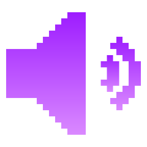

Magenta llevado a la práctica
Chain Tripping (2019) — Nominado al Grammy 2020
Álbum creado con Google Magenta a partir de 80 canciones previas desglosadas en MIDI por instrumento, con la utilización de las siguientes herramientas:
MusicVAE
Composición de melodías y acordes mediante interpolación.
MusicVAE
Composición de melodías y acordes mediante interpolación.
Usaban distintos riffs presentes en canciones propias, y la IA se encargaba de generar compases intermedios para unirlos.
NSynth
Síntesis de timbres híbridos (acústico + analógico).

NSynth
Utilizando grabaciones aisladas de instrumentos y voces, lo unieron con la IA para que pueda generar nuevos sonidos, combinando características de instrumentos reales con sintetizadores modulares
 REVELA CON LOS PADS 1 y 2
REVELA CON LOS PADS 1 y 2